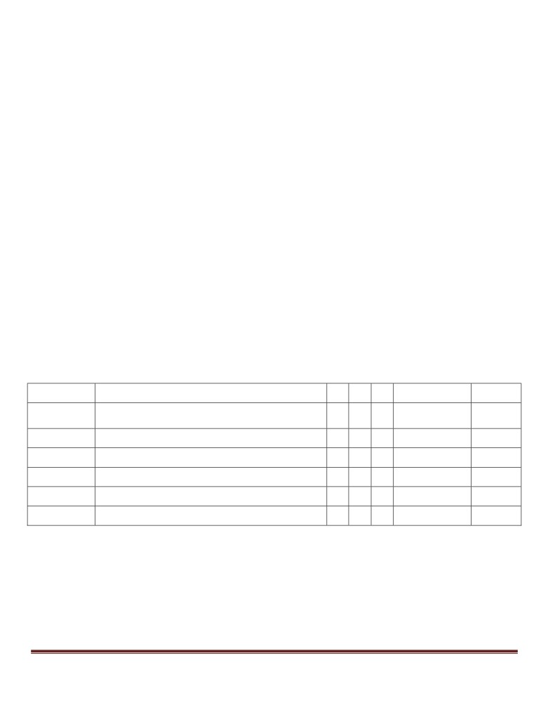

COURSE STRUCTURE, SYLLABUS AND
SCHEME OF EXAMINATION
FOR
BACHELOR OF COMPUTER
APPLICATION
(BCA)
2020-21 Onwards
Department of Computer Applications
Bachelor Of Computer Application
Page 1

VBS PURVANCHAL
UNIVERSITY, JAUNPUR
DEPARTMENT OF COMPUTER APPLICATIONS
VBS PURVANCHAL UNIVERSITY, JAUNPUR
STUDY & EVALUATION SCHEME
BCA (Bachelor of Computer Applications)
SEMESTER III
SUB CODE
SUBJECT
L
T
P
TA/CT/ESE
TOTAL
BCA-301
COMPUTER BASED NUMERICAL &
3
1
0
10/20/70
100
STATISTICAL TECHNIQUES
BCA-302
SOFTWARE ENGINEERING
3
1
0
10/20/70
100
BCA-303
PRINCIPLES OF OPERATING SYSTEM
3
1
0
10/20/70
100
BCA-304
JAVA PROGRAMMING
3
1
0
10/20/70
100
BCA-L31
CBNST LAB
0
0
3
30/70
100
BCA-L32
JAVA LAB
0
0
3
30/70
100
TOTAL - 600
Bachelor Of Computer Application
Page 2
SEMESTER III
COMPUTER BASED NUMERICAL AND STATISTICAL TECHNIQUES
BCA 301
Unit - I
Floating Point Arithmetic:
Representation of floating point number, Operations, Normalization, Pitfalls of floating point
representation, Error in numerical computation.
Iterative Methods:
Bisection methods, Regula-Falsi method, Newton-Raphson method.
Unit - II
Simultaneous Linear Equations:
Solution of systems of linear equations, Gauss elimination direct method and Pivoting, Ill conditioned
system of equations, Refinement of solution, Gauss Seidal method.
Unit - III
Interpolation and approximation:
Finite differences, Difference tables, Polynomial Interpolation: Newton forward and backward formula.
Central Difference formula: Gauss forward and backward formula.
Interpolation with unequal intervals:
Langrange’s interpolation, Newton Divided difference formula.
Unit - IV
Statistics:
Statistics and its role in decision making, Internal and external source of data, Formation of frequency
distribution and types of frequency distribution, Simple and weighted mean, median and mode.
Unit - V
Correlation:
Significance of study of Correlation, Types of Correlation: Positive and Negative correlation, Simple,
Partial and Multiple Correlation, Linear and Non-linear correlation, Coefficient of Correlation, Use of
Regression analysis, Difference between correlation and regression analysis, Regression Lines:
Regression equation of Y on X and X on Y.
Books:
1. Rajaraman, “Computer Oriented Numerical Methods”, PHI
2. Gerald and Wheatly, “Applied numerical Analysis”, AW.
3. Pradip Niyogi, “Numerical Analysis and algorithms”, TMH.
Bachelor Of Computer Application
Page 3
SEMESTER III
SOFTWARE ENGINEERING
BCA 302
Unit - I
Introduction
Introduction to Software Engineering, Importance of Software, The feauters of software, Software
development life-cycle.
Unit - II
Software requirement specification:
Software process, Water Fall Model, Incremental Model, Prototyping Spiral Model, Role of Management in
Software development, Role of matrices and measurement, Problem analysis, Requirement specification,
Monitoring and Control.
Unit - III
Software Design:
Design principles, Problem partitioning, Abstraction, Top-down and Bottom-up design, Structured
approach, Functional versus Object oriented approach, Design specification and Verification, Monitoring
and Control, Cohesiveness, Coupling, Forth generation techniques, Functional independence, Software
architecture.
Unit - IV
Coding:
Top-down and Bottom-up programming, Structured programming, Information hiding, Programming
style and internal documentation. Testing: Testing principles, Levels of testing, Functional testing,
Structural testing, Test plane, Test case specification, Reliability assessment, Software testing strategies,
Verification and validation, Un it testing, Integration testing, Alpha and Beta testing, system testing and
debugging.
Unit - V
Software Project Management:
The Management spectrum - (The people, The product, the process, the project), Cost estimation, project
scheduling, Staffing, Software Configuration management, Structured V S Unstructured maintenance.
Book:
1. Pressman, “Software Engineering: A practitioner’s approach”, TMH
2. Pankaj Jalote, “ Software Engineering”, Narosa
3. Ghezzi, Carlo and Others, “Fundamental of Software Engineering”, PHI.
Bachelor Of Computer Application
Page 4
SEMESTER III
PRINCIPALS OF OPERATING SYSTEM
BCA 303
Unit - I
Introduction
Operating system and functions, evaluation of operating system, batch, interactive, time-sharing & real
time systems, System protection, system components, system structure, operating system services.
Unit - II
Concurrent process
Process, state transition, interrupts, process control block, principle of concurrency, producer-consumer
problem, critical section,
Unit - III
CPU scheduling
Scheduling concept, performance criteria, scheduling algorithms such as FCFS, SJF, Round-Robin.
Deadlock
System model, deadlock characterization, prevention.
Unit - IV
Memory Management
Real storage, resident monitor, multiprogramming with fixed partition, multiprogramming with variable
partition, multiple base register, paging, segmentation, paged segmentation, virtual memory concept,
demand paging, page replacement algorithms, allocation of frames, thrashing, cache memory
organization, impact on performance
Unit - V
UNIX/LINUX
Unix system kernel & Utilities, File & Directories, Single & compound statement, basic commands, Bourn
shell, korn shell & C shell, shell meta characteristics, shell variables & scripts, environment, integer
arithmetic & string manipulation, decision making.
Books:
1. Operating system : Paterson
2. Operating system: Andrew S. Tannebaum
3. Operating System: W. Stalling
Bachelor Of Computer Application
Page 5
SEMESTER III
JAVA PROGRAMMING
BCA 304
Unit - I
Introduction to Java : Importance and features of java, keywords, constants, variables and data types,
Operators and expressions, Decision making, branching and looping: if.. else, switch, ?: operator, while,
do, for statements, labeled loops, jump statements : break, continue, return.
Introducing classes , objects and methods: defining a class, adding variables and methods, creating
objects, constructors, class inheritance.
Unit - II
Arrays and strings : creating an array, one and two dimensional arrays, string array and methods, String
and String Buffer classes, Wrapper classes.
Inheritance : Basics types, using super, Multilevel hierarchy abstract and final classes, Object class,
Packages and interfaces, Access protection, Extending Interfaces, packages.
Unit - III
Exception Handling : Fundamentals exception types, uncaught exceptions, throw, throw, final, built in
exception, creating your own exceptions.
Multithreaded Programming
: Fundamentals, Java thread model: priorities, synchronization,
messaging, thread class, Runnable interface, interthread Communication, suspending, resuming and
stopping threads.
Unit - IV
Input/Output : Basics, Streams, Byte and Character stream, predefined streams, Reading and writing
from console and files. Using Standard Java Packages (lang, util, io, net).
Networking : Basics, networking classes and interfaces, using java.net package, doing TCP/IP and
Datagram Programming.
Unit - V
Event Handling : Different mechanism, the Delegation Event Model, Event Classes, Event Listener
Interfaces, Adapter and Inner Classes, Working with windows, graphics and text, using AWT controls,
Layout managers and menus, handling Image, animation, sound and video, Java Applet.
Books:
1. James Rumbaugh etal, “Object Oriented Modeling and Design”, PHI
2. Herbert Schieldt, “The Complete Reference: Java”, TMH.
3. E. Balagurusamy, “Programming in JAVA”, TMH.
Bachelor Of Computer Application
Page 6